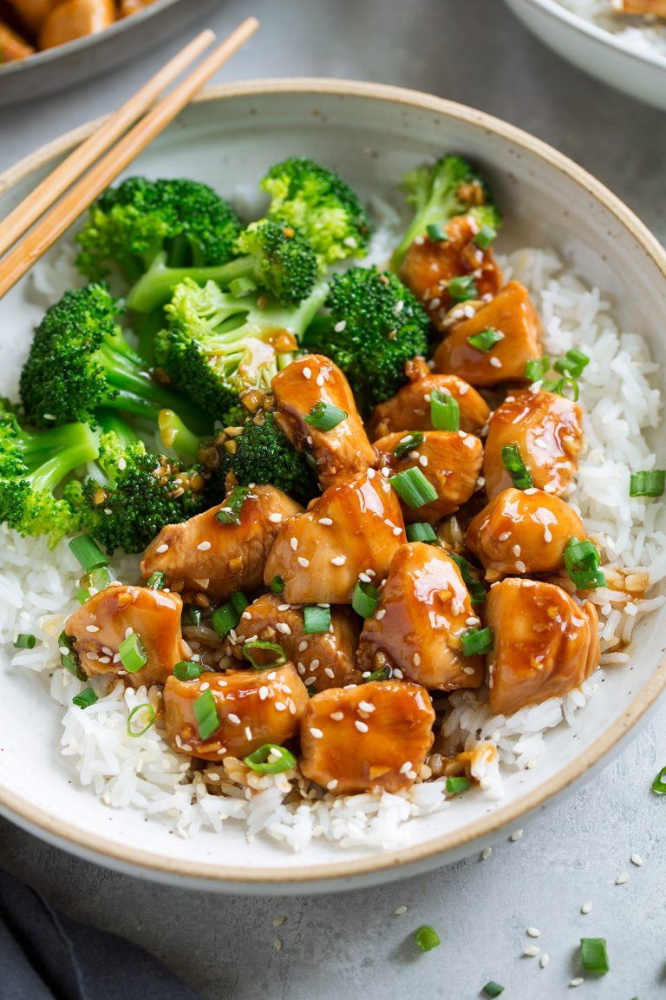

teriyaki chicken in 15 minutes

This tastes just like your favorite Asian take-out but you can have this ready
faster than the time it would take to go pick up take-out! No marinade required.
Ingredients
- 1 1/4 lbs. boneless skinless chicken breasts, diced into 1-inch cubes
- 1 Tbsp olive oil
- 1/4 cup low-sodium soy sauce
- 1/4 cup water*
- 2 Tbsp honey
- 1 1/2 Tbsp packed light brown sugar
- 1 Tbsp rice vinegar
- 1/4 tsp toasted sesame oil
- 2 tsp peeled and minced fresh ginger
- 2 tsp peeled and minced fresh garlic (2 cloves)
- 2 tsp cornstarch
- Sesame seeds and chopped green onions, for serving (optional)
Instructions
- Heat olive oil in a 12-inch non-stick skillet over medium-high heat.
- Add in chicken and let brown on bottom about 3 - 4 minutes then flip and continue to cook until center registers about 160 degrees, about 3 minutes longer.
- While chicken is cooking, in a small mixing bowl (or liquid measuring cup) whisk together soy sauce, water, honey, brown sugar, rice vinegar, sesame oil, ginger, garlic and cornstarch.
- Stir the sauce in with the cooked chicken and continue to cook and toss until sauce has thickened, about 30 - 60 seconds longer.
- Serve warm garnished with green onions and sesame seeds if desired.
Notes
- *For more flavor you can use 2 Tbsp water and 2 Tbsp Mirin.
- Recipe inspired by my Grilled Teriyaki Chicken Bowls
NUTRITION
Amount per serving:
Calories 258 | % Daily Value* | Fat 7g - 11% | Saturated Fat 1g - 6% | Cholesterol 90mg - 30% | Sodium 698mg - 30% | Potassium 553mg - 16% | Carbohydrates 15g - 5% |
Sugar 13g - 14% | Protein 30g - 60% | Vitamin A 40IU - 1% | Vitamin C 1.7mg - 2% | Calcium 14mg - 1% | Iron 0.8mg - 4%
* Percent Daily Values are based on a 2000 calorie diet.